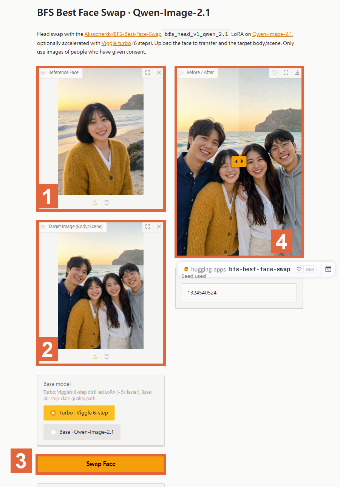
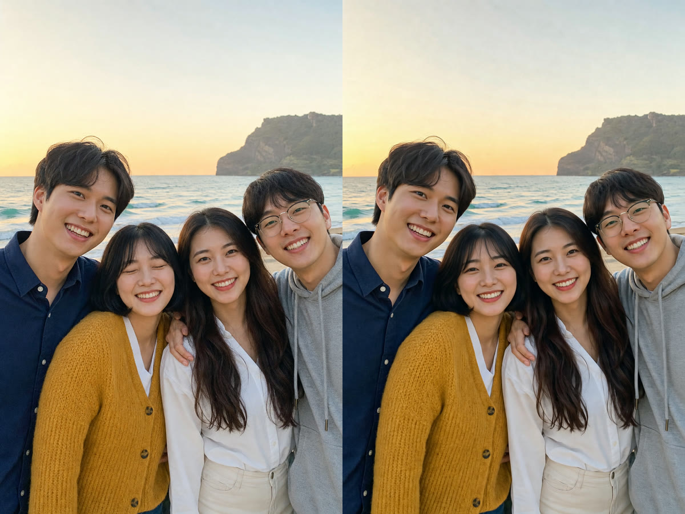
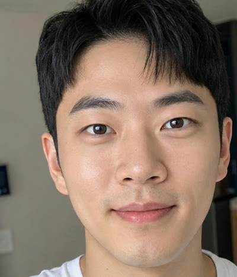

무료예요. 사진 두 장(바꿀 사진 + 넣을 얼굴)을 넣으면, 그 사람 머리만 바꿔 끼우고 옆 사람·배경·조명은 그대로 둬요. 고개 기울기와 표정은 원래 사진을 따라가요. 허깅페이스에 공개된 페이지라 설치 없이 브라우저에서 바로 쓰고, 로그인 없이도 하루 몇 장은 돼요.
아래 '복사해서 쓰기'의 주소를 브라우저에 넣어요. 로그인 없이도 돼요. 허깅페이스 무료 계정으로 로그인하면 하루에 더 많이 돌릴 수 있어요.
눈 뜬 얼굴이 나온 컷을 올려요. 이 사진의 머리카락·눈·코 생김새를 가져가요.

단체 사진처럼 바꾸고 싶은 사진을 올려요. 결과는 이 사진 크기·구도를 그대로 따라가요.
기본값(Turbo · Viggle 6-step)이면 대기열이 없을 때 30초 안팎이에요. 사람이 많으면 순서를 기다려요.
결과 칸 가운데 손잡이를 좌우로 끌면 전후가 비교돼요. 오른쪽 위 내려받기 버튼으로 저장해요. 마음에 안 들면 Swap Face를 한 번 더 — 누를 때마다 결과가 조금씩 달라요.
고칠 사진: 바다 앞 네 명, 노란 카디건 친구만 눈 감음. 넣을 얼굴: 같은 친구가 같은 날 혼자 찍은 컷. 결과: 그 친구 얼굴만 눈 뜬 얼굴로 바뀌고 나머지 세 명과 바다는 그대로였어요.

고칠 사진 자리에 영화 장면 캡처, 넣을 얼굴에 셀카를 넣으면 옷·소품·조명은 그대로 두고 얼굴만 바뀌어요. 고개 방향과 표정은 원래 장면을 따라가요. 머리 모양은 넣은 얼굴 쪽을 따라가요(모자·머리 장식은 남는 편).

브라우저 주소창
https://huggingface.co/spaces/hugging-apps/bfs-best-face-swap
도움이 되셨다면
@ai.antenna.kr
에서 바로 쓰는 AI 활용법을 계속 올립니다.